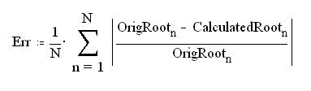
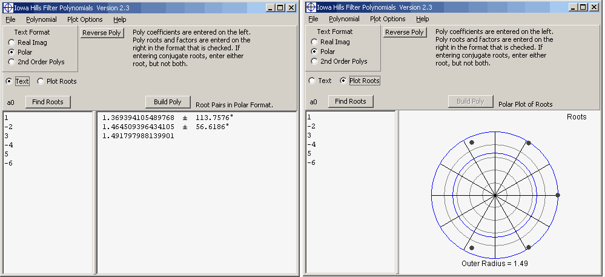

|
Iowa Hills Software P51 Polynomial Root Finder and Quartic and Cubic Root Finder Home |
This page gives the source code for two root finders. The first is the P51 Root Finder which is for polynomials with real coefficients, up to 100th order. The second is a Quartic and Cubic root finder, which solves for roots algebraically. The C++ source code for both is here. P51 Source Code.
The P51 Root Finder is a top to bottom rewrite of the Jenkins Traub Root Finder. It uses some of the same mathematics used by Jenkins and Traub, but it is not a translation of their algorithm into C. The P51 algorithm is quite different in many respects.
The Jenkins Traub root finder was written in the early 70's, making it more than 40 years old. In 1970 the Jenkins Traub root finder was state of the art technology, and to its credit, many authors claim that it is still the root finder by which all others are judged. The problem however, is that this archaic piece of FORTRAN code is virtually indecipherable. Its liberal use of goto statements and global variables makes it incredibly difficult to follow.
The development of P51 started as an effort to do a straight conversion of Jenkins Traub from FORTRAN into C. The original intent was to get rid of the global variables and goto statements, but otherwise make as few changes as possible. For numerous reasons however, this simple goal was unattainable, and we ultimately made numerous substantive changes.
For example, this algorithm no longer scales the polynomial coefficients at the beginning of the algorithm. Jenkins and Traub did this as a way to avoid overflow and underflow, but this scaling led to a convergence test that is indecipherable, which may be the ultimate reason for the algorithm's inaccuracies.
The P51 algorithm does not use special forms of recursion, or combine fixed shift iterations with variable shift iterations. Another important difference is the degree of, and the calculation of, the K polynomial used to find 2nd order factors (sometimes referred to as an H polynomial). We use an N-2 degree polynomial where Jenkins Traub used an N-1 degree polynomial. We initialize K with the 2nd derivative of P, while J-T initialized K to the 1st derivative.
Ultimately, these changes led to a more linear algorithm, making it much easier to follow and understand. The underlying mathematics used in P51 originated with Jenkins and Traub in this paper, (eq. 9.8 is of particular interest), but we did not implement their math as they did in their FORTRAN algorithm, and made significant changes to the equations used to update the 2nd order coefficients u and v.
Accuracy
In a word, accuracy is the biggest difference between this
algorithm and Jenkins Traub. In virtually all of our tests, this algorithm gave more
accurate results than J-T (unless the error was insignificant). The tests were run by
building polynomials from known roots, and then comparing the calculated roots
with the originals.
The error was calculated as follows:

The errors from P51 are typically 1% of those from Jenkins Traub, but as with all root finder tests, this result depends on the type of polynomial tested (degree, root types, and root locations). In some cases, the P51's results were only 10X more accurate, while in other cases the difference would be more than 1000X.
The accuracy tests were done by taking the average error result from 250 tests, across a wide range of polynomial orders and root locations. The J-T algorithm gave slightly better accuracy in some cases, but this was not typical.
Unfortunately, an accuracy test such as this is fraught with problems. For example, we can't know with certainty that the J-T code we were testing was done properly. We downloaded two different algorithms, which were converted to C in dramatically different ways, but both gave similar results. Unfortunately, both were done using 64 bit double variables, instead of 80 bit long double's as is used in P51. We converted the J-T code to long doubles, but this had little effect. We may have also done this conversion improperly as the convergence criteria used in J-T is quite complicated.
Testing
We would urge the reader to test this algorithm, or any other root finder,
before using it in your application. No root finder is absolutely robust, so you
need to test them with the types of polynomials you typically work with.
The author of this algorithm is an electrical engineer, so the testing was biased toward polynomials with roots primarily located between the two circles with radii of 0.01 and 100. For a given polynomial, the variation in polynomial coefficients was limited to about 50 orders of magnitude.
To facilitate your testing, we included two test functions in the source code files. The first function will build a polynomial from a set of roots. This makes it easy to generate a test polynomial from known roots, then the found roots can be compared to the originals.
The second function sorts roots. The problem with comparing roots is that the roots returned by the root finder will not be arranged in the same order as the originals. This simple function will align the original roots with the found roots in their respective arrays, making it easy to compare the two.
Speed
Speed is only important as an indicator of a properly functioning
algorithm. Otherwise, speed isn't an issue, unless it's absurdly slow. We needed
better accuracy from a root finder, so that's what we emphasized. Nevertheless,
P51 can be slightly faster, or slightly slower than J-T, depending on root
locations.
Links to Jenkins Traub in C.
These two sources are close representations of the original J-T algorithm
written in C.
Akiti
C.R. Bond
Quartic and Cubic Root Finder
The source code file for
P51 also contains a 3rd and 4th order algebraic root finder. This code
originated at TOMS, Algorithm 326
which
is based on the paper "Roots of Low Order Polynomials" by Terence R.F.Nonweiler
CACM (April 1968).
We made extensive changes to the TOMS code however. Among other things, we use
scaling and polynomial reversals as a way to greatly improve the
algorithm's accuracy and range. We also made extensive changes to the test
conditions used in the algorithm. This code should be useful if a relatively light and fast algorithm is needed
for low order polynomials. Since this code doesn't use iteration, it will find
4th order roots about seven times faster than P51.
The Name
P51 was named after the American P-51 Mustang used to hunt Zeros in WWII.
A Utility Program with P51 Implemented
You can try P51 with this Filter
Polynomial utility program. This program's primary purpose is to generate
the 2nd order coefficients needed for analog filters, but the P51 root finder
can be accessed directly as shown in these two screen shots. The polynomial
coefficients are entered in the left pane.

Copyright 2015 Iowa Hills Software